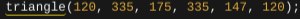

What to do and How to do it
What I created
I made clovers. One clover was the logo of a three leaf clover and the other was a regular four leaf clover
I then made the logo black and made the four leaf clover green
Does the Project Work Overall?
The project does work very well overall. I am very happy I was able to make my own design and make it work with the help of my classmates and my teacher.
Specifics of the Code and How they Work
Some specifics of the code are the draw "function" code. The "draw function" code allows you to input the code for your javascript drawing
Some others are the ellpise and triangle code that enables you to draw circles amd triangles
Others are the if statements which enable you to determine what pops up on the x or y axis
Choices I made
Some choices I made were making the leaves for the logo black and the leaves on the four leaf clover green. Also, I made the choice of making the stems triangular instead of rectangular because it looks better with a triangle stem.
Three Leaf
Four Leaf

How This Changed my Connection with Art and Programming
This changed my connection with art and programming because I got to make what I wanted to make without any repercussions. I got to make
This:
And this:
What I Would Change if I had More Time
I would probably have made a loop on the clovers where the clovers change from green to black and vice versa
THANK YOU